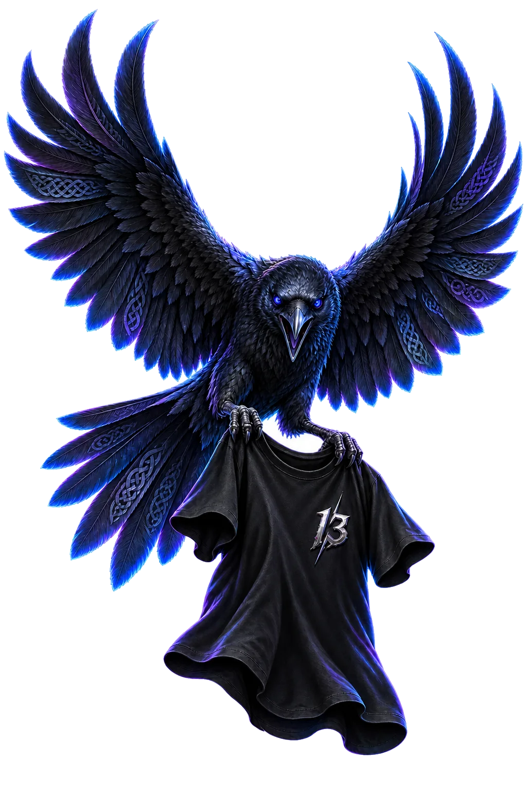
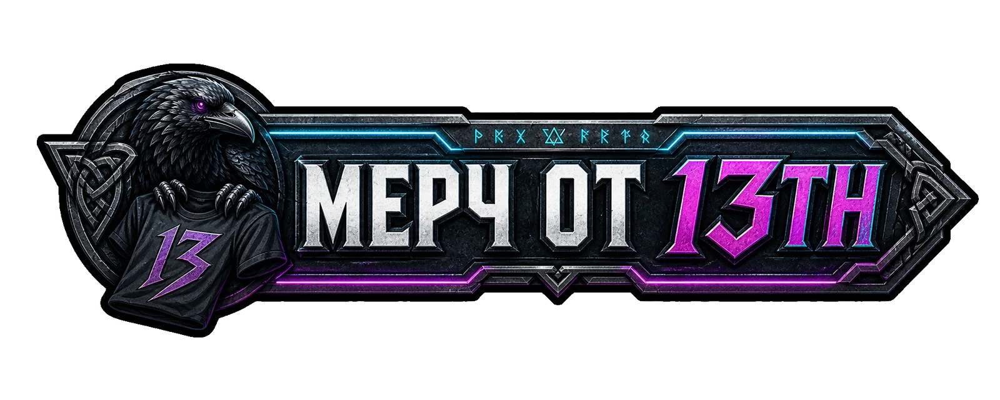
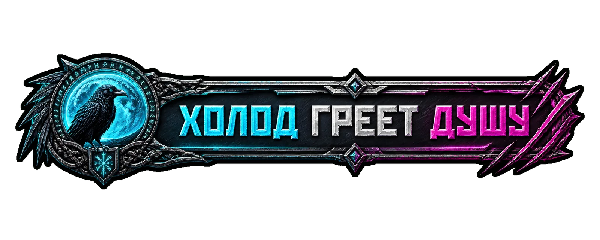
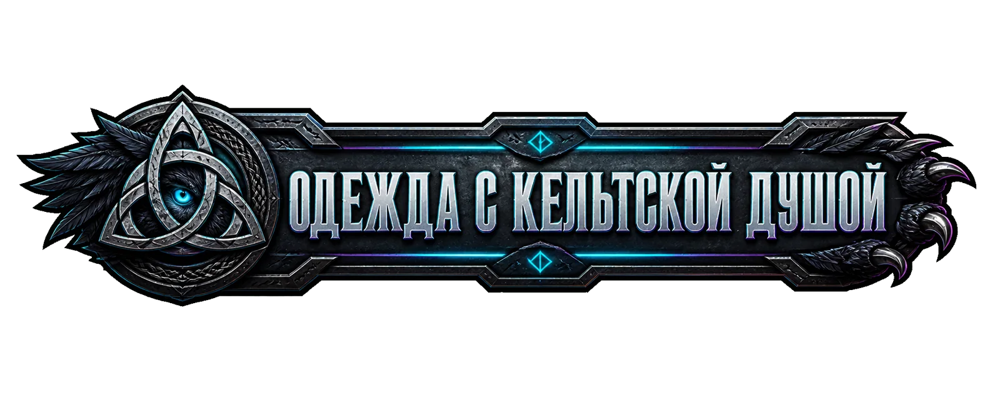

Музыкальное продолжение
#Разные голоса
Трек продолжил историю четырёх футболок: разные характеры и дороги сходятся в одной точке, не теряя собственного голоса.
Открыть в музыке↗ArtS13Studio · совместные истории
Не просто два имени рядом. Мы переводим характер людей и команд в ткань, визуальный язык и музыку.
Коллаборация 01 · первая история
Началось с персональной футболки для Волка. Затем одна вещь выросла в отдельный язык мерча и оформления его проекта.

Первая вещь
Образ ворона, холодный металл и знак 13th стали отправной точкой. Футболка создавалась под конкретного человека — его голос, характер и связь с аудиторией.
Продолжение истории
Три направления, собранные вокруг общего образа: ворон, кельтское плетение и холодный неоновый свет.



Найти Волка
Коллаборация 02 · команда и звук
Четыре пилота — четыре разных характера и четыре эксклюзивные футболки. Вещи создавались только для ребят команды, без общего тиража.


Музыкальное продолжение
Трек продолжил историю четырёх футболок: разные характеры и дороги сходятся в одной точке, не теряя собственного голоса.
Открыть в музыке↗Команда Custom23